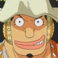
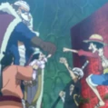

Piratas do Chapéu de Palha
Os Piratas do Chapéu de Palha, também conhecidos como a Tripulação do Chapéu de Palha ou simplesmente Chapéus de Palha, são uma tripulação pirata ascendente e infame que se originou do East Blue, mas que possui vários membros de locais diferentes. Eles são o principal foco e protagonistas do mangá e anime One Piece, e são liderados pelos protagonistas principais, Monkey D. Luffy. Os "Chapéus de Palha" foram nomeados assim devido a assinatura de Luffy, seu chapéu, que foi dado a ele por Shanks, o Ruivo. Eles foram referidos assim pela primeira vez por Smoker em Alabasta. A tripulação navegou no Going Merry, o primeiro navio oficial dos Chapéus de Palha, até o Arco Water 7. Durante o Arco Pós-Enies Lobby, Franky e Iceburg construíram um novo navio que foi chamado de Thousand Sunny por Iceberg, embora os membros lutassem por nomes diferentes. Os Chapéus de Palha atualmente consistem em dez membros cujas recompensas combinadas são iguais a 8.815.001.000.
Na sequência dos eventos no Arquipélago de Sabaody, todos os nove membros foram separados um do outro. Por dois anos, eles treinaram em locais relativamente isolados, tornando-se mais fortes para ajudar uns aos outros. Eles então se reuniram e, desde então, têm se tornado uma força ativa e massiva no Novo Mundo, derrotando o homem mais importante no Submundo e removendo-o do poder, tendo uma enorme e poderosa frota pirata se formando para servir sob eles e adicionando o ex-Shichibukai Jinbe à sua tripulação. Eles até conseguiram levar uma das armas vivas da Yonkou Big Mom, Zeus, para sua tripulação, como servo voluntário de Nami.
Membros da Equipe
Tripulação Principal
Como resultado das escolhas de Luffy sobre quem se junta à tripulação, os Chapéus de Palha são notáveis por serem uma das mais variadas, se não bizarras, tripulações piratas no mundo de One Piece.
Suas posições têm membros muito diferentes uns dos outros. Estes incluem um médico que é uma rena que muda de forma e que pode ser confundida com outra coisa, dependendo da sua forma, como um gorila quando é um humano completo ou um tanuki quando está na sua forma habitual; um cyborg que é um carpinteiro e que tem um comportamento muito excêntrico e não usa quase nada, exceto camisas e cuecas de natação; e um músico esquelético animado, morto-vivo e pervertido. Se suas vidas e atividades anteriores são consideradas, isso só aumenta a estranheza coletiva da tripulação: o capitão tem uma família composta de pessoas infames e perigosas; seu combatente era um ex-caçador de recompensas; seu cozinheiro é um príncipe fugitivo de uma família de assassinos reais; seu atirador é um mentiroso compulsivo cujo pai é membro da tripulação de um Yonkou; e sua navegadora é uma ladra especializado em roubar piratas. Sua arqueóloga também trabalhou para uma organização criminosa anteriormente dirigida por um Shichibukai, e ela também é uma assassina habilidosa e a única sobrevivente de Ohara. O timoneiro da tripulação é um Homem-Peixe que não era apenas um ex-Shichibukai e capitão dos Piratas do Sol, mas também um ex-prisioneiro da Grande Prisão, que é onde ele conheceu Luffy. A tripulação até capturou uma arma viva e Homie, anteriormente sob o controle de um dos Yonkou, e tê-lo de bom grado tornar-se um servo para a tripulação.
Nefertari Vivi é a princesa da coroa de Alabasta, que junto com seu pato de estimação Karoo acabou viajando com os Piratas do Chapéu de Palha durante a maior parte da Saga Alabasta. Ela foi convidada a continuar navegando com a tripulação após a guerra em Alabasta, mas, no final, decidiu permanecer em Alabasta para cumprir seus deveres reais.
Os Chapéus de Palha têm quatro usuários da Fruta do Diabo: Luffy, Chopper, Robin e Brook. A maior parte da tripulação é bastante jovem, com três membros em seus vinte anos, três ainda sendo adolescentes e quatro membros com trinta anos ou mais, embora dois dos quatro membros mais antigos sejam tão infantis quanto os outros. Diferentemente da maioria dos tripulantes, eles consideram que seus navios também são membros da tripulação.
Membros da Tripulação
| Piratas do Chapéu de Palha | ||||
 |
 |
 |
 |
 |
| Monkey D. Luffy | Roronoa Zoro | Jinbe | Sanji | Nami |
 |
 |  |
 |
 |
| Nico Robin | Ussop | Tony Tony Chopper | Franky | Brook |
| Companheiros | ||||
| Zeus | Carue | |||
| Navios | ||||
 |
||||
| Going Merry | Thousand Sunny | |||
| Aliados | ||||
|  |  |
 |
||
| Aliança Ninja- Pirata-Mink- Samurai |
Galley-La Company |
Família Franky |
Piratas Fire Tank |
|